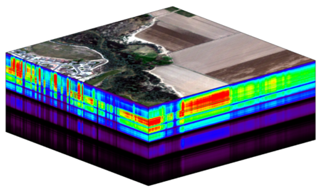
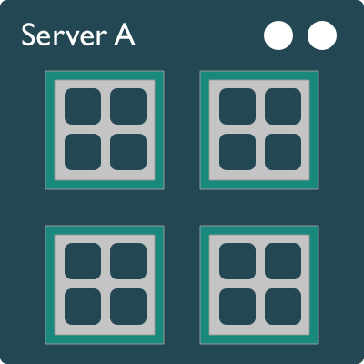

library(palmerpenguins)
library(dplyr)
library(tidyr)
bill_length <- penguins %>%
select(species, bill_length_mm) %>%
drop_na() %>%
as.data.frame()
head(bill_length)
TipLearning Objectives
- Understand what parallel computing is and when it may be useful
- Understand how parallelism can work
- Review sequential loops and *apply functions
- Understand and use the
parallelpackage multicore functions - Understand and use the
foreachpackage functions - Review asynchronous futures and the
furrrpackage
1 Introduction
Processing large amounts of data with complex models can be time consuming. New types of sensing means the scale of data collection today is massive. And modeled outputs can be large as well. For example, here’s a 2 TB (that’s Terabyte) set of modeled output data from Ofir Levy et al. 2016 that models 15 environmental variables at hourly time scales for hundreds of years across a regular grid spanning a good chunk of North America:

There are over 400,000 individual netCDF files in the Levy et al. microclimate data set. Processing them would benefit massively from parallelization.
Alternatively, think of remote sensing data. Processing airborne hyperspectral data can involve processing each of hundreds of bands of data for each image in a flight path that is repeated many times over months and years.

2 Why parallelism?
Much R code runs fast and fine on a single processor. But at times, computations can be:
- cpu-bound: Take too much cpu time
- memory-bound: Take too much memory
- I/O-bound: Take too much time to read/write from disk
- network-bound: Take too much time to transfer
To help with cpu-bound computations, one can take advantage of modern processor architectures that provide multiple cores on a single processor, and thereby enable multiple computations to take place at the same time. In addition, some machines ship with multiple processors, allowing large computations to occur across the entire set of those processors. Plus, these machines also have large amounts of memory to avoid memory-bound computing jobs.
3 Processors (CPUs), Cores, and Threads
A modern CPU (Central Processing Unit) is at the heart of every computer. While traditional computers had a single CPU, modern computers can ship with mutliple processors, each of which in turn can contain multiple cores. These processors and cores are available to perform computations. But, just what’s the difference between processors and cores? A computer with one processor may still have 4 cores (quad-core), allowing 4 (or possibly more) computations to be executed at the same time.

Microprocessor: an integrated circuit that contains the data processing logic and control for a computer.
Multi-core processor: a microprocessor containing multiple processing units (cores) on a single integrated circuit. Each core in a multi-core processor can execute program instructions at the same time.
Process: an instance of a computer program (including instructions, memory, and other resources) that is executed on a microprocessor.
Thread: a thread of execution is the smallest sequence of program instructions that can be executed independently, and is typically a component of a process. The threads in a process can be executed concurrently and typically share the same memory space. They are faster to create than a process.
Cluster: a set of multiple, physically distinct computing systems, each with its own microprocessors, memory, and storage resources, connected together by a (fast) network that allows the nodes to be viewed as a single system.
A typical modern computer has multiple cores, ranging from one or two in laptops to thousands in high performance compute clusters. Here we show four quad-core processors for a total of 16 cores in this machine.

You can think of this as allowing 16 computations to happen at the same time. Theroetically, your computation would take 1/16 of the time (but only theoretically, more on that later).
Historically, many languages only utilized one processor, which makes them single-threaded. Which is a shame, because the 2019 MacBook Pro that I am writing this on is much more powerful than that, and has mutliple cores that would support concurrent execution of multiple threads:
jones@powder:~$ sysctl hw.ncpu hw.physicalcpu
hw.ncpu: 12
hw.physicalcpu: 6To interpret that output, this machine powder has 6 physical CPUs, each of which has two processing cores, for a total of 12 cores for computation. I’d sure like my computations to use all of that processing power. Because its all on one machine, we can easily use multicore processing tools to make use of those cores. Now let’s look at the computational server included-crab at NCEAS:
jones@included-crab:~$ lscpu | egrep 'CPU\(s\)|per core|per socket'
CPU(s): 88
On-line CPU(s) list: 0-87
Thread(s) per core: 1
Core(s) per socket: 1
NUMA node0 CPU(s): 0-87Now that’s more compute power! included-crab has 384 GB of RAM, and ample storage. All still under the control of a single operating system.
Finally, maybe one of these NSF-sponsored high performance computing clusters (HPC) is looking attractive about now:
- Stampede2 at TACC
- 4200 KNL nodes: 285,600 cores
- 1736 SKX nodes: 83,328 cores
- 224 ICX nodes: 17,920 cores
- TOTAL: 386,848 cores
- Delta at NCSA
- 124 CPU Milan nodes (15,872 cores)
- 100 quad A100 GPU nodes (6400 cores + 400 GPUs)
- 100 quad A40 GPU nodes (6400 cores + 400 GPUs)
- 5 eight-way A100 GPU nodes (640 cores + 40 GPUs):
- 1 MI100 GPU node (128 cores + 8 GPUs)
- 7 PB of disk-based Lustre storage
- 3 PB of flash based storage
- TOTAL: 29,440 cores, 848 gpus

Note that these clusters have multiple nodes (hosts), and each host has multiple cores. So this is really multiple computers clustered together to act in a coordinated fashion, but each node runs its own copy of the operating system, and is in many ways independent of the other nodes in the cluster. One way to use such a cluster would be to use just one of the nodes, and use a multi-core approach to parallelization to use all of the cores on that single machine. But to truly make use of the whole cluster, one must use parallelization tools that let us spread out our computations across multiple host nodes in the cluster.
4 Modes of parallelization
Several different approaches can be taken to structuring a computer program to take advantage of the hardware capabilities of multi-core processors. In the typical, and simplest, case, each task in a computation is executed serially in order of first to last. The total computation time is the sum of the time of all of the subtasks that are executed. In the next figure, a single core of the processor is used to sequentially execute each of the five tasks, with time flowing from left to right.

In comparison, the middle panel shows two approaches to parallelization on a single computer: Parallel Threads and Parallel Processes. With multi-threaded execution, a separate thread of execution is created for each of the 5 tasks, and these are executed concurrently on 5 of the cores of the processor. All of the threads are in the same process and share the same memory and resources, so one must take care that they do not interfere with each other.
With multi-process execution, a separate process is created for each of the 5 tasks, and these are executed concurrently on the cores of the processor. The difference is that each process has it’s own copy of the program memory, and changes are merged when each child process completes. Because each child process must be created and resources for that process must be marshalled and unmarshalled, there is more overhead in creating a process than a thread. “Marshalling” is the process of transforming the memory representation of an object into another format, which allows communication between remote objects by converting an object into serialized form.
Finally, cluster parallel execution is shown in the last panel, in which a cluster with multiple computers is used to execute multiple processes for each task. Again, there is a setup task associated with creating and mashaling resources for the task, which now includes the overhead of moving data from one machine to the others in the cluster over the network. This further increases the cost of creating and executing multiple processes, but can be highly advantageous when accessing exceedingly large numbers of processing cores on clusters.
The key to performance gains is to ensure that the overhead associated with creating new threads or processes is small relative to the time it takes to perform a task. Somewhat unintuitively, when the setup overhead time exceeds the task time, parallel execution will likely be slower than serial.
5 When to parallelize
It’s not as simple as it may seem. While in theory each added processor would linearly increase the throughput of a computation, there is overhead that reduces that efficiency. For example, the code and, importantly, the data need to be copied to each additional CPU, and this takes time and bandwidth. Plus, new processes and/or threads need to be created by the operating system, which also takes time. This overhead reduces the efficiency enough that realistic performance gains are much less than theoretical, and usually do not scale linearly as a function of processing power. For example, if the time that a computation takes is short, then the overhead of setting up these additional resources may actually overwhelm any advantages of the additional processing power, and the computation could potentially take longer!
In addition, not all of a task can be parallelized. Depending on the proportion, the expected speedup can be significantly reduced. Some propose that this may follow Amdahl’s Law, where the speedup of the computation (y-axis) is a function of both the number of cores (x-axis) and the proportion of the computation that can be parallelized (see colored lines):
So, its important to evaluate the computational efficiency of requests, and work to ensure that additional compute resources brought to bear will pay off in terms of increased work being done. With that, let’s do some parallel computing…
6 Pleasingly Parallel with Palmer Penguins
When you have a list of repetitive tasks, you may be able to speed it up by adding more computing power. If each task is completely independent of the others, then it is a prime candidate for executing those tasks in parallel, each on its own core. For example, let’s build a simple loop that uses sample with replacement to do a bootstrap analysis. In this case, we select bill_length_mm and species from the palmerpenguins dataset, randomly subset it to 100 observations, and then iterate across 3,000 trials, each time resampling the observations with replacement. We then run a logistic regression fitting species as a function of length, and record the coefficients for each trial to be returned.

Given this data, we can use a general linear model to estimate bill length as a function of species, where we use a loop to bootstrap over repeated subsamples of this dataset.
trials <- 3000
res <- data.frame()
system.time({
trial <- 1
while(trial <= trials) {
index <- sample(100, 100, replace=TRUE)
result1 <- glm(bill_length[index,1]~bill_length[index,2], family=binomial(logit))
r <- coefficients(result1)
res <- rbind(res, r)
trial <- trial + 1
}
})The issue with this loop is that we execute each trial sequentially, which means that only one of our processors on this machine are in use. In order to exploit parallelism, we need to be able to dispatch our tasks as functions, with one task going to each processor. To do that, we need to convert our task to a function, and then use the *apply() family of R functions to apply that function to all of the members of a set. In R, using apply used to be faster than the equivalent code in a loop, but now they are similar due to optimizations in R loop handling. However, using the function allows us to later take advantage of other approaches to parallelization. Here’s the same code rewritten to use lapply(), which applies a function to each of the members of a list (in this case the trials we want to run):
boot_fx <- function(trial) {
index <- sample(100, 100, replace=TRUE)
result1 <- glm(bill_length[index,1]~bill_length[index,2], family=binomial(logit))
r <- coefficients(result1)
res <- rbind(data.frame(), r)
}
trials <- seq(1, trials)
system.time({
results <- lapply(trials, boot_fx)
})7 Approaches to parallelization
When parallelizing jobs, one can:
Use the multiple cores on a local computer through
mclapplyUse multiple processors on local (and remote) machines using
makeClusterandclusterApply- In this approach, one has to manually copy data and code to each cluster member using
clusterExport - This is extra work, but sometimes gaining access to a large cluster is worth it
- In this approach, one has to manually copy data and code to each cluster member using
7.1 Parallelize using: mclapply
The parallel library can be used to send tasks (encoded as function calls) to each of the processing cores on your machine in parallel. This is done by using the parallel::mclapply function, which is analogous to lapply, but distributes the tasks to multiple processor cores. mclapply gathers up the responses from each of these function calls, and returns a list of responses that is the same length as the list or vector of input data (one return per input item). Now let’s demonstrate with our bootstrap example. First, determine how many cores are available on this machine:
library(parallel)
numCores <- detectCores()
numCoresThen, using that, run our 3000 bootstrap samples with the same function, but this time parallel on those numCores cores.
system.time({
res_mca <- mclapply(trials, boot_fx, mc.cores = numCores)
})7.2 Parallelize using: foreach and doParallel
The normal for loop in R looks like:
for (i in 1:3) {
print(sqrt(i))
}The foreach method is similar, but uses the sequential %do% operator to indicate an expression to run. Note the difference in the returned data structure.
library(foreach)
foreach (i=1:3) %do% {
sqrt(i)
}In addition, foreach supports a parallelizable operator %dopar% from the doParallel package. This allows each iteration through the loop to use different cores or different machines in a cluster. Here, we demonstrate with using all the cores on the current machine:
library(foreach)
library(doParallel)
registerDoParallel(numCores) # use multicore, set to the number of our cores
foreach (i=1:3) %dopar% {
sqrt(i)
}
# To simplify output, foreach has the .combine parameter that can simplify return values
# Return a vector
foreach (i=1:3, .combine=c) %dopar% {
sqrt(i)
}
# Return a data frame
foreach (i=1:3, .combine=rbind) %dopar% {
sqrt(i)
}The doParallel vignette on CRAN shows a much more realistic example, where one can use `%dopar% to parallelize a bootstrap analysis where a data set is resampled 10,000 times and the analysis is rerun on each sample, and then the results combined:
# Let's use the palmerpenguins data set to do a parallel bootstrap
# From the doParallel vignette, but slightly modified
num_trials <- 3000
system.time({
r <- foreach(icount(num_trials), .combine=rbind) %dopar% {
ind <- sample(100, 100, replace=TRUE)
result1 <- glm(bill_length[ind,1]~bill_length[ind,2], family=binomial(logit))
coefficients(result1)
}
})
# And compare that to what it takes to do the same analysis in serial
system.time({
r <- foreach(icount(num_trials), .combine=rbind) %do% {
ind <- sample(100, 100, replace=TRUE)
result1 <- glm(bill_length[ind,1]~bill_length[ind,2], family=binomial(logit))
coefficients(result1)
}
})
# When you're done, clean up the cluster
stopImplicitCluster()8 Futures with furrr
While parallel and mclapply have been reliably working in R for years for multicore parallel processing, different approaches like clusterApply have been needed to run tasks across multiple nodes in larger clusters. The future package has emerged in R as a powerful mechanism to support many types of asynchronous execution, both within a single node and across a cluster of nodes, but all using a uniform evaluation mechanism across different processing backends. The basic idea behind future is that you can either implicitly or explicitly create a future expression, and control is returned to calling code while the expression is evaluated asynchronously, and possibly in parallel depending on the backend chosen.

In a familiar form, you can define a future expression analogously to how you define a function, using an expression such as:
library(future)
f <- future({
cat("Hello world!\n")
6.28
})
v <- value(f)
vThis creates an expression that is evaluated and will have a result available sometime in the future, but we don’t know when… it could be seconds, minutes, or hours later, depending on the task complexity and available resources. What we can do is to ask the future expression to return its result when it is available using value(), which will block until the expression has been evaluated.
Alternatively, we can check if the expression has completed its evaluation without blocking using the resolved() function, which returns TRUE when the future has been evaluated and the result value is ready to be retrieved. This lets us do other useful work while our process is waiting for the future expression to finish its work. For example, imagine the hypothetical model_run future, where we can do some other useful things while we wait for the model to run. To do this, we need to use a processing plan that uses multiple cores, such as multisession:
plan(multisession)
download_data <- function() {
# Sleep, and just pretend to go get the data
Sys.sleep(0.5)
return(c(1,2,3))
}
run_model <- function(d) {
# Sleep, and just pretend to run a complicated model
Sys.sleep(0.5)
return(42)
}
model_result <- future({
d <- download_data()
result <- run_model(d)
result
})
while(!resolved(model_result)) {
cat("Waiting for model task to complete...\n")
Sys.sleep(0.2)
cat("Do some more work now, like print this message...\n")
}
value(model_result)The multisession futures plan is one in which each future task is evaluated in a separate, background R session that runs on the same host that launched the process. If the host has multiple cores available, then multisession will make use of these and create background sessions on each of the available cores. If all background sessions are busy, then the creation of new future expressions wil be blocked until one is available.
So, what’s the point of all of this? Basically, the future package provides a mechanism for evaluating expressions asynchronously, which we can leverage to launch many sessions on available cores. We can harness this with another package, furrr, which functions as an asynchrobous analogue to purrr.
With furrr, you can use the map() pattern to execute an expression across a set of inputs using asynchronous futures. Most of the details here are hidden under the hood, so this usage pattern should feel really familiar to purrr users. For example, let’s return to our bootstrap linear model, and reimplement it, first using purrr, and then with furrr.

library(purrr)
system.time({
res_purrr <- map(trials, boot_fx)
})library(furrr)
plan(multisession, workers=8)
system.time({
res_furrr <- future_map(trials, boot_fx, .options = furrr_options(seed = TRUE))
})So basically by dropping in furrr::future_map as a replacement for purrr::map, we can see an immediate decrease in execution time, on my machine from 22 seconds down to 8 seconds. This is not as good as the improvement we saw with the other methods, which I attribute to the overhead of starting all of the background R sessions.
9 Summary
In this lesson, we showed examples of computing tasks that are likely limited by the number of CPU cores that can be applied, and we reviewed the architecture of computers to understand the relationship between CPU processors and cores. Next, we reviewed the way in which traditional for loops in R can be rewritten as functions that are applied to a list serially using lapply, and then how the parallel package mclapply function can be substituted in order to utilize multiple cores on the local computer to speed up computations. We also installed and reviewed the use of the foreach package with the %dopar operator to accomplish a similar parallelization using multiple cores. And finally, we reviewed the use of the furrr::future_map() function as a drop in replacement for map operations using asynchronous futures.
10 Readings and tutorials
- Multicore Data Science with R and Python
- Beyond Single-Core R by Jonoathan Dursi (also see GitHub repo for slide source)
- The venerable Parallel R by McCallum and Weston (a bit dated on the tooling, but conceptually solid)
- The doParallel Vignette
- future: Unified Parallel and Distributed Processing in R for Everyone
- furrr